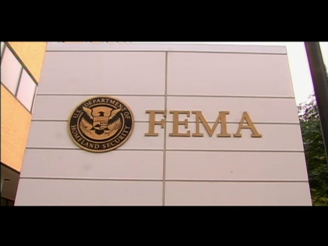

- Title Page
- Introduction
- Investigative Reporting at the Sun-Sentinel
- Storms Galore
- The Federal Emergency Management Agency
- Raising Questions
- Going to Print
- Waiting for Records
- Into the Neighborhoods
- A Morning Meeting
- The Next Story
- Inspectors
- The Data Arrives
- Results and Sources
- Criminals
- Putting the Pieces Together
- Nationwide?
The Federal Emergency Management Agency
The agency in which the Sun-Sentinel was starting to take an interest was the Federal Emergency Management Agency. Founded by executive order of President Jimmy Carter in 1979, the new agency consolidated disaster relief responsibilities previously spread—sometimes redundantly—across more than 100 national, state, and local authorities.[8] FEMA’s mandate was to respond to disasters both natural and man-made, including hurricanes and earthquakes as well as biological, chemical, and nuclear attacks. The agency would supplement local and state emergency response agencies, to distribute aid and assist recovery efforts.
Courtesy Exposé: America's Investigative Reports.
© Exposé 2006
FEMA had a rough start, including a refugee crisis and an accident at Pennsylvannia’s Three Mile Island nuclear power plant. Matters had not much improved by 1989, when Hurricane Hugo struck Florida and South Carolina, and an earthquake shook San Francisco. But Hurricane Andrew, which struck South Florida in 1992, so strained the agency that several public officials called for its dismantlement. Andrew caused a record $30 billion worth of damage and left roughly 160,000 people homeless.[9] In July 1993, the Government Accountability Office (GAO), Congress’ oversight arm, expressed “doubts about whether FEMA is capable of responding to catastrophic disasters.”[10]
It was not all FEMA’s fault. By law, the agency could act only after a governor judged that state agencies were overwhelmed, and appealed for the president to declare a disaster.[11] But some reforms were clearly called for, and FEMA Director James Lee Witt lost no time in implementing the most urgent. He reduced the agency’s internal red tape, and redistributed its resources away from the Cold War-era priority of preparing for a nuclear attack toward dealing with other disasters. By the time floods engulfed parts of the Midwest in August 1993, a mere month after the GAO issued its report, the agency had become more nimble. Its response to the 1995 bombing of a government building in Oklahoma City was similarly adroit; the FEMA director himself arrived in Oklahoma City the evening of the incident for a briefing, and FEMA search and rescue crews arrived to reinforce the local fire department by the following morning.[12]
Nonetheless, the agency struggled to balance disaster victims’ immediate need for aid with vigilance in distributing taxpayer dollars. In addition to providing supplies such as water and tarpaulins, FEMA dispensed “individual assistance”—money for uninsured, disaster-related damage to a victim’s property and possessions. These grants could reach more than $25,000, and a disaster victim could apply for funds over the phone. A FEMA inspector would then visit the property to verify the damage, and an applicant could receive a check in a matter of days.[13]
FEMA was well aware that the potential for fraud was ever-present. The agency tried to guard against it through careful screening and approval processes. Nonetheless, fraudulent claims sometimes slipped through. By May of 2002, for example, 39 people had been arrested in connection with FEMA fraud in the aftermath of the September 11, 2001 attacks on the World Trade Center and the Pentagon. One woman had secured $25,000 by claiming that her husband had been killed in the attack, when in fact he was alive and residing in another state.[14]
In 2003, FEMA was folded into the newly formed Department of Homeland Security (DHS), created in response to the September 11 attacks. The merger of 22 agencies with national security functions was the largest reorganization of the federal government since 1947, and was intended to improve the nation’s preparation for and response to other potential attacks. There were concerns at the time that FEMA’s absorption into DHS would only complicate its mission, leading it to concentrate on terrorism at the expense of natural disasters. Former FEMA director Witt had called it a “mistake” to incorporate FEMA into the new department, and several members of Congress had also voiced misgivings.[15]
By 2004, however, FEMA had seemed to prove the doubters wrong. There had been no major problems with its disaster responses—although there had also been no catastrophic events.
Footnotes
[8] Federal Emergency Management Agency, “FEMA History,” Updated April 1, 2008.
[9] Mimi Hall, “Report faults FEMA on aid,” USA Today, May 18, 2005.
[10] “Disaster Management: Improving the Nation’s Response to Catastrophic Disasters,” Government Accountability Office, Report to Congressional Requesters, July 1993.
[11] “Disaster Management: Improving the Nation’s Response to Catastrophic Disasters,” Government Accountability Office.
[12] Daniel Franklin, “The FEMA Phoenix,” Washington Monthly, July/August 1995.
[13] Sally Kestin and Megan O’Matz, “Amount of hurricane disaster aid to Miami-Dade County, Fla., raises questions,” South Florida Sun-Sentinel, October 10, 2004.
[14] Kathy Kiely, “Feds target bogus 9/11 disaster relief claims,” USA Today, May 12, 2002.
[15] Walter Pincus, “FEMA’s influence may be cut under new department,” Washington Post, July 24, 2002.